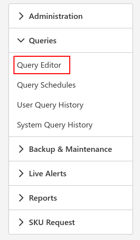

Query Editor
To run a query over multiple instances, open up the Query Editor screen.

The Query Editor pretty much works in the same way as composing an email but with SQL scripts and the To Instances chips being the instances and groups in which to execute the script against.
- To Instance: This is where you would insert all the instances or instance groups you would like to send the query to.
- Description: Used to discern the query in the User Query History, scheduled queries and list of saved queries.
- Transactional: Toggle whether to run the entire script below in a SQL Transaction or not.
- Use Database: (optional) The name of the database(s) to run the script against.
- Table Name: (optional) The name of the table to save the results of the first query result set.
- Time to live: Set the length of time that the query is valid for.
- Script Body: SQL query code.
Press the Execute button once you are ready to at the top right which will take you to a screen to view the results query results.
Tip
You can provide a list of databases and you can use wildcards in the Use Database field e.g. 'master,POS%'
In the above example the databases master, POS and POS001 will be matched and the script will be run against these databases.
Tip
You can use GO statements in the Script Body and run almost any script that you would run in SQL Server Management Studio.
Tip
If you save your results to table, you can build PowerBI and Qlikview reports on that table's data
The results screen shows how the query executed against each instance.
The possible statuses of Status column:
- Pending: - the query hasn't executed against this instance yet
- Complete: - the query has run and was successful
- Error: - SQLPro tried to connect to the instance and there was an error (common issue is no comms)
- Complete With Error: - the query ran but there was a SQL error
- Cancelled: - the query was cancelled by one of the users
- Timed Out: - the query exceeded the time to live time and was cancelled by the system.
Tip
If you are not saving the results to a table, you can view the results of the query consolidated into a single view by clicking on the Result Set x tab that you wish to view.
You can also view any of the SQL errors that occured by selecting Errors tab
Note
This screen does not auto refresh. Click on the Refresh button to refresh the results on the screen.
You will then have the ability to save the specific query for later use and/or schedule the query.
Note
The User Query History screen comes in handy when you want to save a previous query that had been run.
From the Query Editor page queries can be saved and edited so as to automate the reporting process. After a query has been saved you can view them in the Saved Query History page which will give you the option to edit, load and delete a query.
Note
When loading a query you're query editor will be populated with all the saved data whereas when you want to edit a query an edit screen will pop up and you will be able to make changes.
The visibility tab refers to who can view your saved queries ie. if you are not able to do work and need someone to fill in for the day.
At the bottom of the Edit query pop up you will find the ability to assign schedules to your query. You can make predetermined schedules and will take notice that the name of the schedule is used to assign it below. If the results of the query need to be emailed tick the Email Results toggle. To add additional schedules select the Add Schedule option at the bottom of the list of schedules. To edit a schedule go to the Query Schedule page.
Tip
More than one schedule can be added to your database and you can find how many queries use a schedule on the Scheduler page.